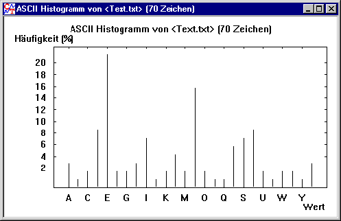

Histogramm (Menü Analyse \ Werkzeuge zur Analyse)
Das Histogramm eines Dokuments gibt die Häufigkeitsverteilung der Zeichen des Dokuments in einem entsprechenden Fenster (Typ Plot) grafisch aus.

Der Befehl zur Berechnung des Histogramms eines Dokuments bewirkt initial eine Anzeige als Balkendiagramm.
Dazu werden auf der Achse nach rechts die Zeichen abgetragen: Bei einem Textfenster werden die Buchstaben des in den Textoptionen ausgewählten Alphabets abgetragen, bei einem Fenster für hexadezimale Ein-/Ausgaben die Zahlen von 0 bis 255 (siehe ASCII-Tabelle).
Auf der Achse nach oben wird die Häufigkeit des entsprechenden Zeichens (in Prozent) abgetragen.
Mit dem Befehl Balkendiagramm im Menü Ansicht kann man zwischen der Ansicht als Balkendiagramm und als Kurvendiagramm hin- und herschalten.
In beiden Diagrammtypen kann die Linienstärke über den Befehl Linienstärke eingestellt werden.
In beiden obigen Diagrammen ist das Histogramm eines Text-Dokuments abgebildet. Man sieht zum Beispiel, dass das häufigste Zeichen ein "E" ist, das zweit häufigste ein "N".